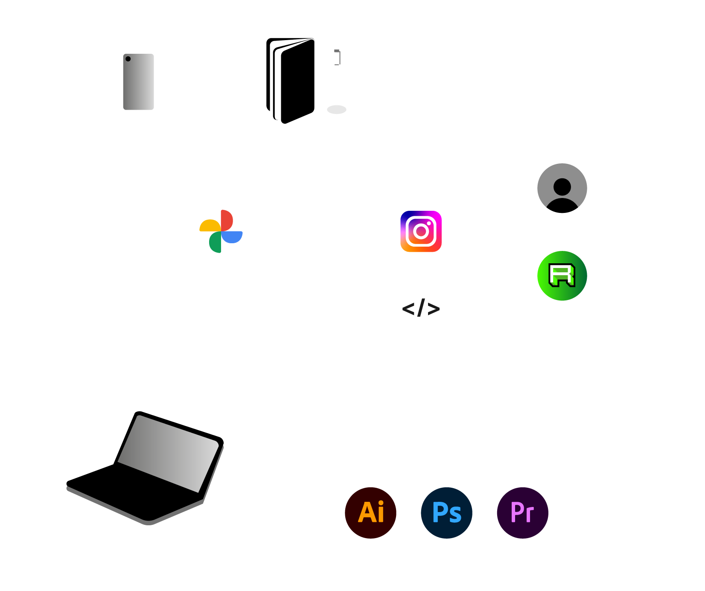
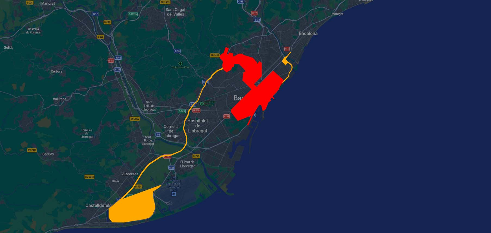
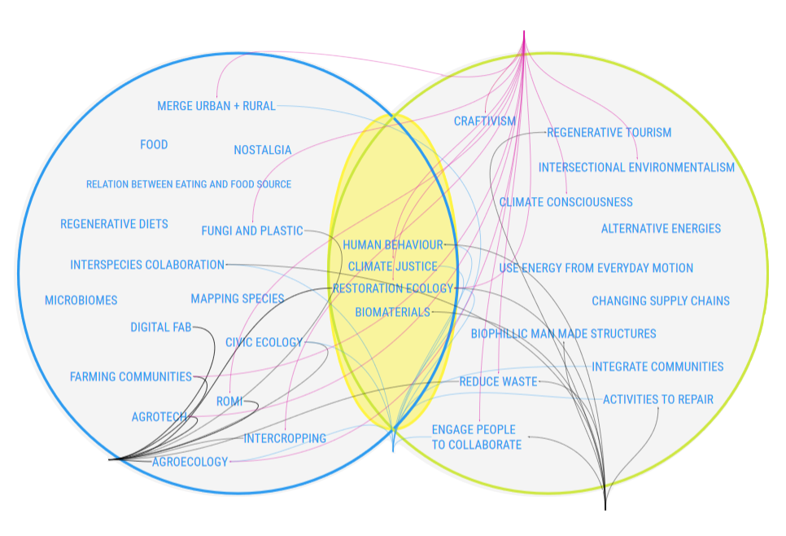

Design Studio 2
Documentation
My documentation is centered around my notebooks and phone. Images and videos are stored in google photos and accessible from my pc. Starting from those I expand on it digitally on my laptop's local drive, instagram and my website.
The majority of my time I use to draw and visualize. Preferably with just pen and paper. Presentable work I create with Adobe CC (either Illustrator, Photoshop or Premiere) or - rarely - MS Powerpoint.
Reflection:
In comparison with the (time)effort I spend on taking notes I re-watch my notebooks too less. Even though the notes serve mainly
as a instant way to visualize and simplify systems, products, thoughts and ideas on the spot, they could be more useful when checked more often.

As a new way of interpreting my notes the video below shows how individual parts of the page can grow from descriptions or problems into ideas, concepts and pre-production drawings.
Via this I learned to re-think the way of documenting sketches and text and how they relate to their pre- and successors.
Exploration
In the past week there started to grow a sense of acknowledgement and recognition in day-to-day things. Meaning that not all the things and people I encountered felt new, but instead brought some sort of familiarity.
Which might be explained by the fact that this is the week where I passed the point of the assumably '21 days it takes to form a habbit'.
Starting from the start in early October I was quite focussed on expanding my reality and orientating through it. Zoomed in on this I believe that my current main physical world is situated in the red area on the map below. With the orange areas being locations of only occasional interaction.

Shared design space
Per definition our initial group was centered around the term Solarpunk; a movement focussed on finding renewable solutions, circular systems and combatting climate-change.
All of which are goals that supposedly everyone would agree to. To specify both in- and outside of this topic and our personal interests we worked in a collective design space found on the Miro platform.
Not necessarily to find matches inbetween each other but more with the goal to define, share and reflect our own topics of attention.

Links:
Miro
By Ruben de Haan on November 10th, 2021
Edited by Ruben de Haan on November 21th, 2021